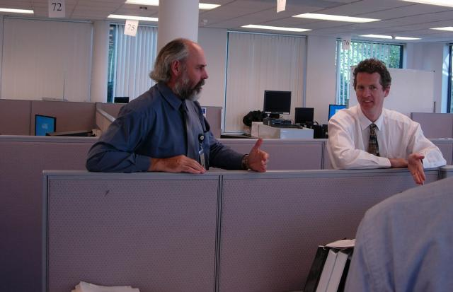
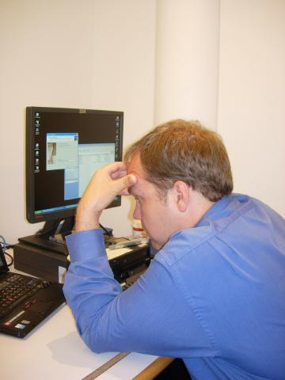
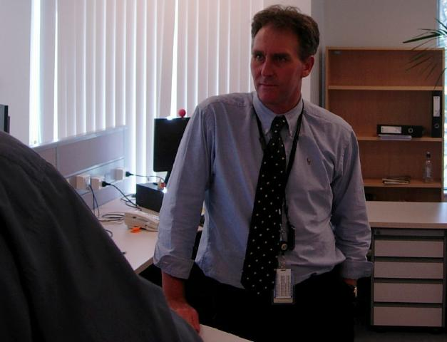
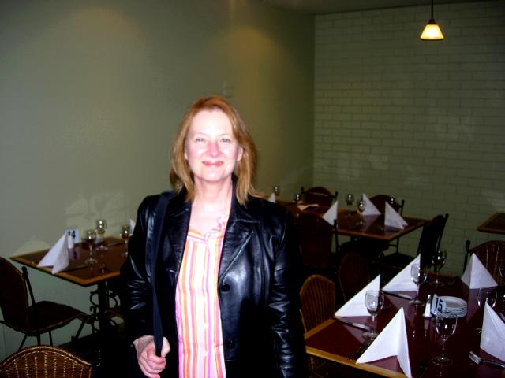
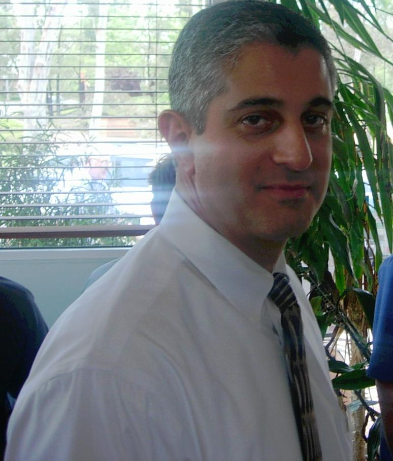
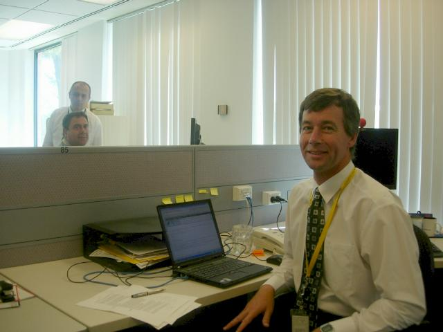
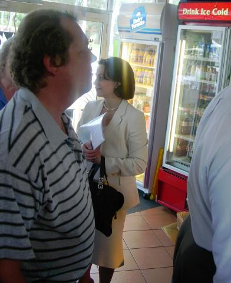
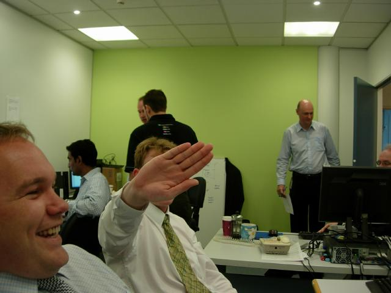
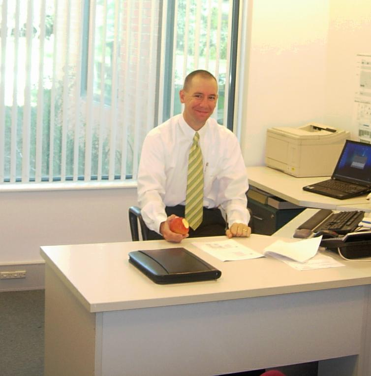
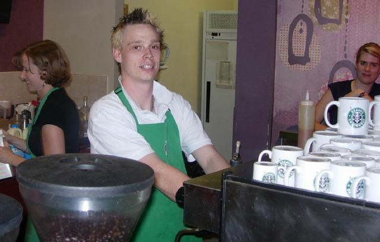

-=Workeroos=-
Someone read the site and asked if I ever worked. I worked on RFPs, proposals, did a lot of consulting, and mainly, designed an enterprise service bus for IBM to implement. It talks to insular mainframe systems (COBOL, ADABAS), and provides SOAP-based services to Peter's business process model.
The office is stuffed with talent,and it's a menagerie of strong personalities, myself included. Here are some key players.

Jon Gough and Glen Best
Worst Case Jon emigrated from Leeds because it was full of stinking optimists. Jon helped me interface to the legacy software via CICS/MQ. Glen is a pure architect, and helped me keep the architecture pure.

Des from IBM helped build the enterprise service bus from my design. I'm his opportunity to say "dude" and "my bad".

Ashley from Sydney built the business rules using iLog. The rules are about things like if you're under 18 and traveling alone, will you be staying with someone you know, along with health and security issues. Ashley used to work with financial services clients, but a tight market forces him to spend 3 days a week in Canberra.
Business rules automate routine decision making, but don't substitute for judgement, as when they quietly admitted one of Saddam's personal assistants.

Proposal dominatrix Robin Gillette flew out to keep things organized. The guy who headed the technical approach section was scared because until someone else arrived, she'd be organizing...him. Robin's great. I've worked with her on two props now. She's from San Diego, trained as an opera singer, had a schizophrenic landlord in Brooklyn with a unique scam--driving tenants out with paranoia and retaining the security deposit.

Ben "The Man" Gianni. This is my boss. He flew out to review the biometrics prop, woo the customer and make himself available for in-person nagging about approving my expense reports.

Franciscus Habraken (L) and Edguer Erhan (seated rear). Frank is the on-site project manager. We're the cats-- self-directed by nature, and client-directed by the nature of working on site. So Frank has taken on a second project to have something to manage. I go over to Frank's house every so often and rage on quondong. His wife has an identical twin, and she's kindly invited me to ride out and stay at her twin's farm when I get the bike out.
Edguer took us out for Turkish food on Turkey day. Someone asked if he spoke Arabic. He pointed out that the Ottoman empire conquered the Arabs, not the other way around. I asked him for tips on ruling Arabs, since we aren't doing a great job. Edguar paused. "You don't know what it takes to rule Arabs," he said.

Joanna Valente, program manger for immigration at CSC Australia, at Momo Cafe across the street, where I get lunch most days.

Lyle doesn't want to be here. He even tried to tell me that pics taken in the lab couldn't appear on the site for security reasons. He knows the Windows security model inside out, but I dare you to find anything compromising in this pic.
James Cherryh (immigration typo victim) wanted to be on the site, but his wife won't let him.

Randall "Boss" Bregaud directs the Research and Acquisition office where we all work. An odd mix to American sensibilities, it sits techies next to procurement lawyers.
Tim Ruggles didn't make it on here due to time constraints--he was buried in the proposal. Tim is my fellow Tech Director working for Ben. He started out in the Navy, became a cop for 8 years, burned out when a mother let her diabetic daughter die because she was too much trouble, went to law school for a year, then..it's going to take a few more dinners for me to figure out his life from that point.

And Lew, who made this site possible by keeping the blood out of my caffeine system.